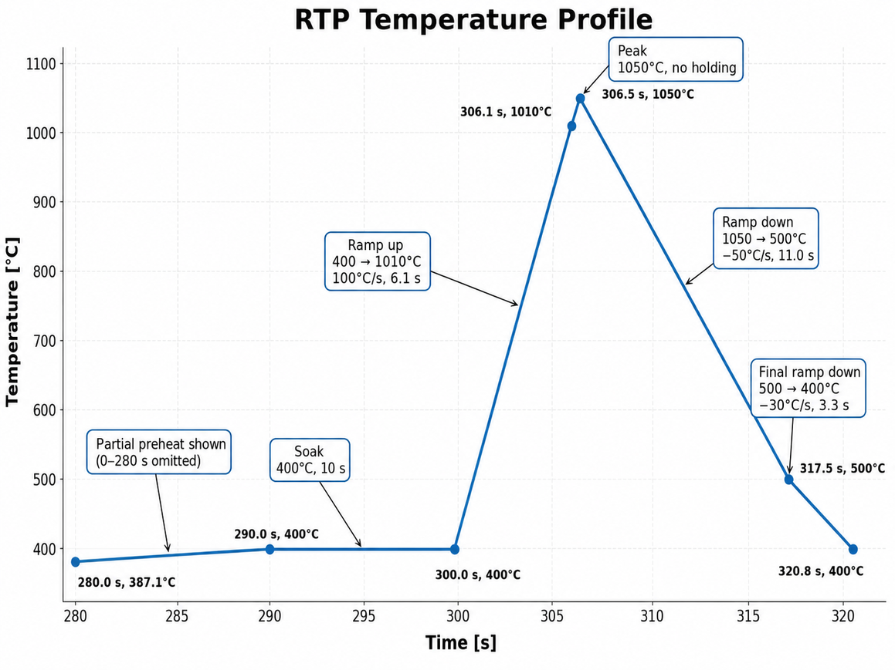
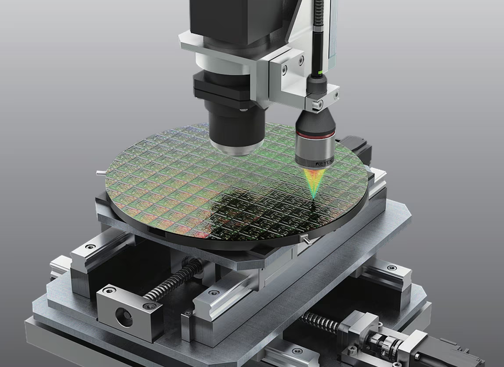

Doping Process Wafer Bow 불량 개선
DOE로 Bow 50μm→12μm 저감
Logic Device 300mm 웨이퍼의 Ion Implantation·RTA Annealing 후 Wafer Bow가 관리규격을 초과해 Photo 공정 Chucking Error를 유발한 문제를 분석했습니다. Bow에 영향을 줄 수 있는 공정 변수를 전수 검토해 유력 인자를 선별하고, 18-run DOE·ANOVA·회귀분석으로 최적 조건을 도출해 Bow를 관리규격(±30μm) 밖 +50μm에서 +12μm로 줄였습니다.
개요
Logic Device 제작용 300mm Wafer(두께 450μm)의 Source & Drain Extension 영역에 P⁺ Ion Implantation 후 Single Wafer RTA(Applied Materials Vantage® Radiance™ Plus RTP)를 적용하는 공정에서, 후공정(Photo)에서 사후 측정된 Wafer Bow가 관리규격을 초과해 Chucking Error·Focus 불량을 유발한 문제를 다뤘습니다. 공정 흐름은 P⁺ Ion Implantation → Single Wafer RTA → Photolithography → Bow 측정 순이며, Bow는 후공정(Photo)에서 확인되는 사후 측정 항목입니다.
발생 현황
| Implant 조건 | 현재 값 |
|---|---|
| Dopant | P⁺ |
| Energy | 60 keV |
| Dose | 5×10¹⁵ ions/cm² |
| Chuck | ESC |
| Backside Cooling | 제한적 |
| 공정 방식 | 장시간 연속공정 |
| RTA 조건 | 현재 값 |
|---|---|
| Preheat | 400℃, 300초 |
| Ramp Up | 100℃/s |
| Peak & Hold | 1050℃, 10초 |
| Ramp Down 1 | −70℃/s |
| Ramp Down 2 | −30℃/s |
BOW = 0.5 × (Hcenter,top + Hcenter,bottom)
Bow 관련 메커니즘 검토
| 구분 | 현재 조건 | Bow 발생 민감도 |
|---|---|---|
| Wafer | 300mm, 450μm, S/D Extension | 300mm·450μm 두께는 Bow 발생에 민감한 조건 |
| Ion Implant | P⁺, 60keV, 5×10¹⁵ ions/cm², 15min | 고선량(5×10¹⁵) Implant로 결정 손상 및 잔류응력 증가 가능 |
| Annealing(RTA) | Peak 1050℃, Ramp-up 100℃/s, Ramp-down −70/−30℃/s, Hold 10s | Thermal Stress 및 Residual Stress 발생 가능(CTE 미스매치로 생긴 변형이 탄성계수(E)와 곱해져 응력으로 전환됨) |
현 공정 적용 조건은 Ion Implant Process > Annealing Process(RTA) 순으로, Bow는 단일 인자가 아니라 Ion Implantation의 Implant Damage와 Annealing 과정의 열응력(Thermal Stress)이 복합적으로 작용해 발생할 가능성이 있다고 판단했습니다. 이 응력은 CTE 차이만으로는 설명되지 않으며, 변형을 실제 응력으로 바꾸는 탄성계수(E)가 함께 작용합니다(σ = E·ε). 따라서 단일 변수 변경이 아닌, 공정 변수의 영향도를 정량적으로 비교할 수 있는 DOE 분석을 수행했습니다.
추정 원인
Bow에 영향을 줄 수 있는 Implant·RTA 전체 변수를 검토해 유력 인자를 선별했습니다.
| 구분 | 변수 | 판정 | 소거/채택 근거 |
|---|---|---|---|
| Implant | Dopant (P⁺) | 무관 | 공정 설계상 선택 — Bow와 직접적 관련 적음 |
| Implant | Acceleration Energy | 채택 | 투영범위 결정, 손상층 깊이에 직접 영향 |
| Implant | Dose | 채택 | 손상층(비정질화, a-Si) 크기 결정 — 비정질 Si는 벌크 결정질 Si보다 탄성계수(E)가 낮아, 두 층의 E·CTE 차이로 mismatch 응력 발생 |
| Implant | Chuck Type (ESC) | 무관(단독) | Backside Cooling 부재와 결합할 때만 의미 |
| Implant | He Backside Cooling | 채택 | 미적용 시 wafer 열이력 불균일 축적의 직접적 원인 |
| Implant | 공정시간(Interval) | 채택 | He 도입 후에도 잔여 영향 확인 필요 |
| RTA | Ramp up rate | 채택 | 열이 벌크로 퍼지는 정도를 좌우하는 요인(국부가열) |
| RTA | Peak Temp / Overshoot | 채택 | 관성에 의한 목표온도 초과 여부 |
| RTA | Ramp down rate | 채택 | Edge-Center 복사냉각 차이 → 열응력 발생, 응력이 항복강도를 넘으면 slip line 등 비가역적 손상으로 이어짐 |
| RTA | Hold time | 채택 | 초고온(1050℃) 노출 시간이 길어질수록 wafer에 막대한 thermal budget 누적 → 개선 시 hold time 최소화(0s) 필요 |
| RTA | N2/O2 Atmosphere | 무관 | 챔버 안정화, 미량 반응 목적 — Bow 영향 미미 |
웨이퍼 Bow 방향 전환 메커니즘
| 공정 단계 | 발생 응력 | Bow 형태 | 원인 메커니즘 |
|---|---|---|---|
| 이온 주입(Implantation) | 인장 응력(Tensile Stress) | Negative(오목한 형태) | 고에너지 이온 충돌로 실리콘 결정 격자가 파괴되고 비정질화 진행 — 손상된 표면층이 수축하려 하나 하부 정상 기판이 이를 억제, 표면에 인장 응력이 집중되며 가장자리가 솟아오르는 오목한 형태 유발 |
| 급속 열처리(RTA) | 압축 응력(Compressive Stress) | Positive(볼록한 형태) | 고온 열처리로 파괴된 격자가 재결정화됨 — 공정 완료 후 냉각 시 표면층과 하부 기판 간 열팽창계수(CTE) 수축률 차이 발생, 표면층이 상대적으로 팽창하려는 힘을 받아 중심부가 솟아오르는 볼록한 형태로 역전 |
Recipe 개선 및 Backside Cooling 도입
Annealing Recipe 변경
| Step | 현재 공정조건 | 변경 공정조건 |
|---|---|---|
| Purge & Pre-heat + Soaking | N₂(10slm) & 400℃(300초) | N₂(10slm) & 400℃(290초) + 400℃ Soaking 10초 |
| Ramp up | 400℃ → 1050℃ (100℃/s) | 400℃ → Peak Setpoint (100/150/250℃/s, DOE 대상) |
| Peak Temp | Target 1050℃ | Overshoot 고려 Setpoint 보정(실제 Wafer Peak = 1050℃) |
| Peak Hold | 1050℃ & 10초 Hold | Hold 제거 → Peak 도달 후 즉시 Cooling |
| Ramp Down① | 1050℃ → 500℃ (−70℃/s) | Peak → 500℃ (−50/−70/−90℃/s, DOE 대상) |
| Ramp Down② | 500℃ → 400℃ (−30℃/s) | 500℃ → 400℃ (−30℃/s, 유지) |
Preheat·Soaking 조정은 Wafer의 초기 온도 균일화로 Center–Edge 온도 편차를 줄이고 급격한 Ramp-up 시 Thermal Shock을 완화하기 위함입니다. Peak Hold 제거는 Ramp 종료 후에도 잔류 열유속과 열관성이 존재해 제어 응답 지연으로 Temperature Overshoot가 발생할 수 있다는 점에서, 고온 Thermal Budget을 줄이고 Wafer 내부로의 과도한 열확산을 억제해 Residual Stress 재분포 및 Bow 고정 가능성을 완화하기 위함입니다.

He Backside Cooling 도입
고진공 챔버 특성상 공기를 통한 열전도가 불가능해 웨이퍼 열축적이 발생하는 진공 한계를 극복하기 위해, 웨이퍼 후면과 ESC 사이 미세 틈새에 고순도 He 가스를 주입해 열을 ESC 칠러로 이동시키는 열전도 경로(Thermal Bridge)를 구축했습니다.
- Bowing 억제 — 실시간 후면 냉각으로 웨이퍼 내/외부의 비대칭 열팽창을 막아 Bowing 유발 응력을 근본적으로 차단
- PR 탄화 방지 — 이온 주입 중 과열을 방지해 Photoresist 패턴의 Burning·Hardening 예방(PR은 탄성계수가 Si·SiO₂보다 훨씬 낮아 웨이퍼 형상 변화에 특히 취약)
- Profile 유지 — 웨이퍼 저온 상태를 유지해 도펀트의 불필요한 열확산(Migration) 제어
- 응력 저감 원리 — He 가스가 열전도 매개체로 작용해 앞뒤 면 ΔT를 줄이면 CTE 미스매치 변형(ε)이 감소하고, 이는 탄성계수(E)와 곱해지는 응력(σ=E·ε)도 함께 낮춰 Bowing을 억제
제어 불가 요인
- 열 관성(Thermal Inertia)에 의한 온도 Overshoot — RTA 장비 특성상 목표 온도 도달 후 가열을 멈추더라도 열 관성에 의해 온도가 목표치를 초과 상승함. 장비의 물리적 특성으로 막을 수 없어, 1050℃가 되기 전에 미리 제동을 거는 제어 방식을 채택
- 장비 냉각 속도(Ramp-down) 상하한선 — 300mm 웨이퍼의 열 균일도를 잃지 않고 천천히 식힐 수 있는 하한선은 −50℃/s이며, 장비의 최대 급속 냉각 상한선은 −90℃/s로 Lock이 걸려 있어 기존 레시피의 −30℃/s 같은 극저속 냉각은 통제 불가능 → 제어 가능한 −50~−90℃/s 범위 내에서 최적화 수행
- 450μm 웨이퍼 자체의 얇은 두께(태생적 취약성) — 두께가 얇아 미세한 온도 구배만 발생해도 쉽게 휘어버리는 구조적 취약점이 있고 스펙상 변경 불가하므로, 400℃에서 충분히 Soaking해 열 균일도를 맞추고 쿨링을 확정 도입하는 방식으로 우회(두께가 얇을수록 동일 응력에서도 곡률이 커짐 — Bow ∝ σ / (E·t²))
DOE 설계 및 회귀분석
선별된 3개 핵심 인자(Dose, Ramp-up rate, Ramp-down rate)로 3수준 18-run DOE를 설계했습니다. Energy는 손상 깊이(Rp)만 결정하고 응력 크기는 Dose가 지배하므로 45keV로 고정하고 DOE 인자에서 제외했으며, 동일 Dose(5×10¹⁵) 조건에서 Short-channel 특성이 검증된 값(US Patent 4,928,156)을 사용했습니다.
| DOE 인자 | 1수준 | 2수준 | 3수준 | 수치 근거 |
|---|---|---|---|---|
| Dose (ions/cm²) | 5×10¹⁵ | 1×10¹⁵ | — | 두 수준 모두 완전 비정질화·응력 포화 영역(Volkert 1991 등) — 저수준(1×10¹⁵)은 임계에 더 가까운 지점, 고수준(5×10¹⁵)은 현 공정 기준값 |
| Ramp-up rate (℃/s) | 100 | 150 | 250 | 150은 여러 문헌에서 test된 수치(25~350℃/s 범위 내), 250은 장비(Vantage Radiance Plus RTP)의 정격 최대 속도 |
| Ramp-down rate (℃/s) | −70 | −90 | −50 | 장비가 낼 수 있는 최대 냉각 상한과 물리적 상태를 고려한 하한 |
18-run 전요인 실험 결과, Dose 1×10¹⁵·Ramp-up 100℃/s·Ramp-down −50℃/s 조합이 Bow 12μm로 최소(Pass), Dose 5×10¹⁵·Ramp-up 250℃/s·Ramp-down −90℃/s 조합이 Bow 43μm로 최대(Fail, Spec 30μm 초과)를 기록했습니다. 18-run × 반복 3회(총 54 관측, 문헌 기반 추정 + 오차 σ=2μm)로 주효과 ANOVA를 수행했습니다.
| 요인 | 기여율 | 유의성 |
|---|---|---|
| B: Ramp-up | 41.20% | *** |
| C: Ramp down | 34.20% | *** |
| A: Dose | 21.10% | *** |
| Error | 3.50% | - |

회귀식은 Bow = 24.93 + 3.69·Dose* + 4.12·Ramp-up* + 5.74·Ramp-down*
(R² = 0.961, Adjusted R² = 0.958)로 도출됐습니다. 세 계수 모두 양(+)의 값으로,
물리적으로는 Dose 증가 → 비정질화 심화 → 벌크 결정질 Si와 탄성계수(E)·CTE 차이
확대 → 미스매치 응력 증가 → Bow 증가, Ramp-up 증가 → 앞면-뒷면 두께방향 순간 ΔT
증가 → CTE 미스매치 변형(ε) 증가 → 탄성계수(E)와 곱해져 응력(σ=E·ε) 증가 → Bow
증가, Ramp-down 급격화 → Edge-Center 및 두께방향 ΔT 동시 증가 → 응력이 항복강도
이내로 완화되지 못하고 고정(잔류응력 재분포) → Bow 증가라는 메커니즘과 일치했습니다.
최적 조건
18-run 중 Bow가 최소로 나타난 조건을 최종 최적 조건으로 채택했습니다.
| 공정 조건 | 변경 값 | Bow 기여 |
|---|---|---|
| Dose | 5×10¹⁵ → 1×10¹⁵ ions/cm² | 최소화 시 −3.69 (이온주입 잔류응력·비정질화 영향 완화) |
| Ramp-up rate | 150 → 100 ℃/s | 최소화 시 −4.12 (승온 열구배 및 열응력 최소화) |
| Ramp-down rate | −90 → −50 ℃/s | 완화 시 −5.74 (냉각 열구배와 slip 발생 가능성 억제) |
| Bow | +50μm → +12μm (관리규격 ±30μm 이내) |

최종 Recipe
| Implant 공정 | 조건 |
|---|---|
| Acceleration Energy | 45 keV |
| Dose | 1×10¹⁵ ions/cm² |
| Chuck Type | ESC |
| Backside Cooling | He gas (12 Torr) |
| RTP: Purge & Preheat + Soaking | N₂(10slm) & 400℃(290+10초 soaking) |
| RTP: Ramp up | 400℃ → 1010℃ (100℃/s) |
| RTP: Peak Temp(No Holding) | 1050℃ |
| RTP: Ramp Down | 1050℃ → 500℃(−50℃/s) → 400℃(−30℃/s) |
향후 관리방안
- Laser Anneal 설비 도입 — 기존 RTA(Wafer 전체 가열) 대신 국소 부위(Wafer 표면)만 밀리초 단위로 가열하는 엑시머 레이저(XeCl 또는 KrF) 어닐링 설비를 도입해 Thermal Budget을 획기적으로 줄이고 Bowing 현상을 근본적으로 차단
- 신규 설비 FDC 모니터링 — Laser Anneal 설비의 가열 시간(Milli-second)과 레이저 출력을 실시간 감시하고, 관리 기준을 벗어나면 즉시 알람 및 Lot Hold 수행
- In-line 휨 실시간 모니터링 — 어닐링 공정 직후 실시간 웨이퍼 곡률 계측 장비를 연동해, Bow 측정값이 관리 기준(±30μm)을 벗어나면 즉시 알람을 발생시켜 후속 포토 공정(Chucking 불량 등)으로 넘어가는 것을 차단
- PM 후 재검증 강화 — 신규 설비의 PM 및 광학계 점검 이후 Dummy Wafer로 휨 수치를 재검증한 뒤 기준을 만족하는 경우에만 양산 진행
- 이상 발생 시 대응 체계 — 휨 불량(+50μm 등) 스펙 이탈 발생 시 즉각 설비 가동 중단(Interlock) 및 Lot Hold 후, 원인 분석과 Monitor Wafer 재확인을 거쳐 재발 방지 이력 관리 수행
- 열 냉각 주기 및 클리닝 표준화 — 장시간 연속 공정 시 챔버 내부에 누적되는 잔류 열 스트레스를 방지하기 위해, 공정 중간에 의무적으로 챔버를 오픈해 클리닝·환기를 수행하는 주기를 표준화
배운 점
- Bow처럼 여러 공정 단계(Implant·RTA)에 걸친 복합적 불량은 단일 변수를 바꾸는 대신, 전체 변수를 물리적 메커니즘 근거로 채택/소거하고 DOE로 정량 비교해야 한다는 접근을 배웠습니다
- 회귀 계수의 부호와 크기를 σ=E·ε 같은 물리 법칙으로 재해석하면, 통계적으로 유의한 인자가 "왜" 유의한지까지 설명할 수 있어 개선방안의 설득력이 커진다는 것을 확인했습니다
- 장비가 물리적으로 낼 수 없는 조건(Overshoot, 냉각 속도 하한/상한)이 있다는 것을 먼저 파악해야, DOE 수준 설정 자체가 현실적인 범위 안에서 의미 있게 이뤄진다는 것을 배웠습니다